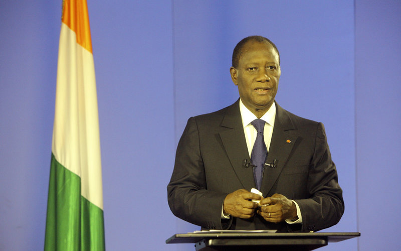

By Pauline Bakary, October 5th, 2021

Image credits to Camilla N'Zi @ National Ivorian Press Association
Yamoussoukro - At today’s press conference, President Alassane Ouattara hoped to remind the nation that solidarity was “of paramount to keep us unified during this time of unrest”, but instead he was met with volley after volley of intense questions by reporters, including the author.
The reporters questioned a controversial French arms deal and Ouattara’s decision to invite European politicians at a political summit in Abidjan amid strong Anti-European protests that spread from Central Africa. Although the president stayed for the whole duration of the press conference, he was visibly nervous and uncomfortable as reporters kept asking him questions either to explain these decisions or voice criticisms from the protests.
Olivier LeBlanc of France 24 asked Ouattara how the arms deal was supposed to help Côte d’Ivoire if the population didn’t want European influence on the government anymore. “We can’t just cut off all ties with France overnight. This was a deal months in the making and it wasn’t placed knowing that protests calling for gradual distancing from Europe would take place.” he responded.
Daphne Toualy, host of La Voix de la Raison on TV Channel La Première, was more direct in delivering a message from a viewer of her show.
“I thought the whole point of ECO was to decrease the depence of West African nations like Côte d’Ivoire from Europe. Instead, your request for military and political aid from France will just increase the influence that Europe has over us. Did you not pay attention to what happened in South Africa and Namibia? Do you wish for us to maintain a neo-colonial relationship with France?”
After a brief moment of silence, Ouattara evoked the memory of first president Félix Houphouët-Boigny. “As per my goals of the success of the nation, we can still maintain a friendly relationship with France and maintain political and economic independence. As Le Vieux used to say, France has been more than kind to us so we should pay that respect mutually”
Bernard Dembélé of La Pomme de Guerre and Jerôme Coulibaly of Notre Défense both questioned the deployment of the Army with the National Gendarmerie to quell the uprisings, to which Ouattara defended the deployment by pointing out that political resources were all used up trying to improve the political infrastructure of Côte d’Ivoire and get the first phase of ECO off the ground, while an economic response would be impractical in addition to the WestAR needing the most attention.
As the conference room was packed with reporters, I, Pauline Bakary, was only able to ask one question to President Ouattara.
“Do you have any plans in the future for requesting aid from Europe, or are you looking to investors elsewhere such as China or the United States?”
He shook his head, saying “The demeanor of President Trump towards the West African Nations leads me to believe America would not cooperate with us, and I have no plans to ask the Chinese for any sort of aid. As for Europe, particularly France, we have the strongest ties with them, but as of now there are no plans to request further aid from them either.”